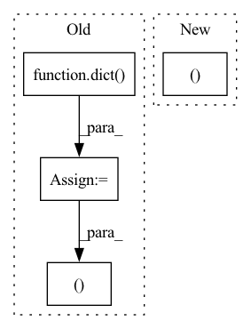

Pattern ID :36399
Before Change
self.epochs_done_in_this_run += 1
if self.epoch % 1 == 0 and better_val_model:
total_losses = dict()
test_losses = dict()
with tqdm.tqdm(total=self.args.total_iter_per_epoch) as pbar_test:
for _, test_sample in enumerate(
self.data.get_test_batches(total_batches=int(self.args.total_iter_per_epoch),
augment_images=False)):
test_losses, total_losses = self.evaluation_iteration(val_sample=test_sample,
total_losses=total_losses,
pbar_val=pbar_test, phase="test")
After Change
self.save_models(model=self.model, epoch=self.epoch, state=self.state)
self.start_time, self.state = self.pack_and_save_metrics(start_time=self.start_time,
create_summary_csv=self.create_summary_csv,
train_losses=train_losses,
val_losses=val_losses,In pattern: SUPERPATTERN
Frequency: 3
Non-data size: 4
Instances Fragment ID: 102994646
Project Name: baiksung/l2f
Commit Name: ff26bcc002c2a6c8f930825661c40b4a3b2462d9
Time: 2018-11-25
Author: antrikohs@gmail.com
File Name: experiment_builder.py
M Class Name: ExperimentBuilder
N Class Name: ExperimentBuilder
M Method Name: run_experiment(1)
N Method Name: run_experiment(1)
M Parent Class: object
N Parent Class: object
M File Name: experiment_builder.py
N File Name: experiment_builder.py
M Start Line: 224
M End Line: 295
N Start Line: 314
N End Line: 375
Before Change
with open(filepath, encoding="utf-8") as f:
reader = csv.DictReader(f, delimiter="\t")
for row in reader:
item = dict( row)
item["answer_text"] = _parse_answer_text(item["answer_text"])
item["answer_coordinates"] = _parse_answer_coordinates(item["answer_coordinates"])
header, table_data = _load_table_data(os.path.join(data_dir, item["table_file"]))
item["table_header"] = header
item["table_data"] = table_data
yield item["id"], item
After Change
header, table_data = _load_table_data(os.path.join(data_dir, item["table_file"]))
item["table_header"] = header
item["table_data"] = table_data
yield idx, item
Fragment ID: 102994645
Project Name: huggingface/datasets
Commit Name: 3538e4e5ad595225c854e59d10736876da4a6d45
Time: 2022-02-22
Author: 8515462+albertvillanova@users.noreply.github.com
File Name: datasets/msr_sqa/msr_sqa.py
M Class Name: MsrSQA
N Class Name: MsrSQA
M Method Name: _generate_examples(3)
N Method Name: _generate_examples(3)
M Parent Class: datasets.GeneratorBasedBuilder
N Parent Class: datasets.GeneratorBasedBuilder
M File Name: datasets/msr_sqa/msr_sqa.py
N File Name: datasets/msr_sqa/msr_sqa.py
M Start Line: 158
M End Line: 166
N Start Line: 157
N End Line: 164
Before Change
joints: np.ndarray = self.get_joints(anno)
mask: np.ndarray = self.get_mask(anno, image_info)
extras = dict(file_name=image_info["file_name"])
return orig_image, mask, joints, extras
def get_joints(self, anno: List[Mapping[str, Any]]) -> np.ndarray:
Decode the keypoints from the COCO annotation and return them as an array of shape [Num Instances, Num Joints, 3].After Change
joints: np.ndarray = self.get_joints(anno)
mask: np.ndarray = self.get_mask(anno, image_info)
return orig_image, mask, joints, gt_areas, gt_bboxes, gt_iscrowd
def filter_joints(
self,
image_shape, Fragment ID: 102994651
Project Name: deci-ai/super-gradients
Commit Name: ca5c56214e3ad7953a6e420a662c199b09dcd8fd
Time: 2023-02-22
Author: ekhvedchenya@gmail.com
File Name: src/super_gradients/training/datasets/pose_estimation_datasets/coco_keypoints.py
M Class Name: COCOKeypointsDataset
N Class Name: COCOKeypointsDataset
M Method Name: load_sample(2)
N Method Name: load_sample(2)
M Parent Class: BaseKeypointsDataset
N Parent Class: BaseKeypointsDataset
M File Name: src/super_gradients/training/datasets/pose_estimation_datasets/coco_keypoints.py
N File Name: src/super_gradients/training/datasets/pose_estimation_datasets/coco_keypoints.py
M Start Line: 77
M End Line: 88
N Start Line: 87
N End Line: 101